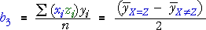

Two-factor interactions
In multiple regression, interaction between two numerical explanatory variables is often modelled with a term involving the product of the variables. For factors with two levels coded as ±1, this type of product term provides the one extra degree of freedom to fully model their interaction,
In a similar way, the other interactions between pairs of factors can be modelled using terms in the model involving products of the coded factors.
Properties
In a factorial experiment, these interaction 'variables' have interesting properties:
The interaction variables therefore behave in the model very similarly to the main effect variables. For example, in the two-factor model,
the interaction coefficient is estimated from the difference between two mean responses — for the runs in which the main effects are equal (with xizi = +1) and those with different main effects (with xizi = -1),

Sugar reduction study
The data are repeated below.
| Main effects | Two-factor interactions | |||||||||
|---|---|---|---|---|---|---|---|---|---|---|
| S si |
A ai |
T ti |
H hi |
S*A si ai |
S*T si ai |
S*H si hi |
A*T ai ti |
A*H ai hi |
T*H ti hi |
Saltiness yi |
| +1 +1 +1 +1 +1 +1 +1 +1 -1 -1 -1 -1 -1 -1 -1 -1 |
+1 +1 +1 +1 -1 -1 -1 -1 +1 +1 +1 +1 -1 -1 -1 -1 |
+1 +1 -1 -1 +1 +1 -1 -1 +1 +1 -1 -1 +1 +1 -1 -1 |
+1 -1 +1 -1 +1 -1 +1 -1 +1 -1 +1 -1 +1 -1 +1 -1 |
+1 +1 +1 +1 -1 -1 -1 -1 -1 -1 -1 -1 +1 +1 +1 +1 |
+1 +1 -1 -1 +1 +1 -1 -1 -1 -1 +1 +1 -1 -1 +1 +1 |
+1 -1 +1 -1 +1 -1 +1 -1 -1 +1 -1 +1 -1 +1 -1 +1 |
+1 +1 -1 -1 -1 -1 +1 +1 +1 +1 -1 -1 -1 -1 +1 +1 |
+1 -1 +1 -1 -1 +1 -1 +1 +1 -1 +1 -1 -1 +1 -1 +1 |
+1 -1 -1 +1 +1 -1 -1 +1 +1 -1 -1 +1 +1 -1 -1 +1 |
7.60 7.92 7.72 7.27 8.09 7.87 7.52 6.89 8.02 8.34 8.20 8.21 8.14 7.82 8.04 7.00 |
Note that all terms again have zero mean and are uncorrelated.
The estimated effects for the two-factor interactions are:
| Interaction | Estimate of effect |
|---|---|
| Saltiness * Acidity | -0.102 |
| Saltiness * Thickness | 0.076 |
| Saltiness * Hotness | -0.003 |
| Acidity * Thickness | -0.124 |
| Acidity * Hotness | -0.151 |
| Thickness * Hotness | -0.138 |
Note that the interaction effects are half the difference between the mean sweetness when both factors are at the same level (whether high or low) and when both factors are different.
Several interactions effects are as large as the main effects.
Higher-order interactions
Higher-order interactions are modelled in a similar way using products of 3 or more of the columns of coded factors. For a factorial experiment, each such interaction 'variable' has half its values +1 and half -1 and it is uncorrelated with all other main effects and interactions.
Interactions between three or more factors are harder to interpret but can be important in some contexts. However:
In most situations, interactions of higher order than 2-factor interactions can be assumed to be negligible.
Sugar reduction study
The table below shows the full 'design matrix' with all interaction variables.
| Main effects | 2-factor interactions | 3-factor interactions | 4-factor int | |||||||||||
|---|---|---|---|---|---|---|---|---|---|---|---|---|---|---|
| S si |
A ai |
T ti |
H hi |
S*A si ai |
S*T si ai |
S*H si hi |
A*T ai ti |
A*H ai hi |
T*H ti hi |
S*A*T si ai ti |
S*A*H si ai hi |
S*T*H si ti hi |
A*T*H ai ti hi |
S*A*T*H si ai ti hi |
| +1 +1 +1 +1 +1 +1 +1 +1 -1 -1 -1 -1 -1 -1 -1 -1 |
+1 +1 +1 +1 -1 -1 -1 -1 +1 +1 +1 +1 -1 -1 -1 -1 |
+1 +1 -1 -1 +1 +1 -1 -1 +1 +1 -1 -1 +1 +1 -1 -1 |
+1 -1 +1 -1 +1 -1 +1 -1 +1 -1 +1 -1 +1 -1 +1 -1 |
+1 +1 +1 +1 -1 -1 -1 -1 -1 -1 -1 -1 +1 +1 +1 +1 |
+1 +1 -1 -1 +1 +1 -1 -1 -1 -1 +1 +1 -1 -1 +1 +1 |
+1 -1 +1 -1 +1 -1 +1 -1 -1 +1 -1 +1 -1 +1 -1 +1 |
+1 +1 -1 -1 -1 -1 +1 +1 +1 +1 -1 -1 -1 -1 +1 +1 |
+1 -1 +1 -1 -1 +1 -1 +1 +1 -1 +1 -1 -1 +1 -1 +1 |
+1 -1 -1 +1 +1 -1 -1 +1 +1 -1 -1 +1 +1 -1 -1 +1 |
+1 +1 +1 +1 +1 +1 +1 +1 -1 -1 -1 -1 -1 -1 -1 -1 |
+1 +1 +1 +1 -1 -1 -1 -1 +1 +1 +1 +1 -1 -1 -1 -1 |
+1 +1 -1 -1 +1 +1 -1 -1 +1 +1 -1 -1 +1 +1 -1 -1 |
+1 -1 +1 -1 +1 -1 +1 -1 +1 -1 +1 -1 +1 -1 +1 -1 |
+1 +1 +1 +1 -1 -1 -1 -1 -1 -1 -1 -1 +1 +1 +1 +1 |
The estimated effects for the three- and four-factor interactions are:
| Interaction | Estimate of effect |
|---|---|
| Saltiness * Acidity * Thickness | -0.003 |
| Saltiness * Acidity * Hotness | 0.061 |
| Saltiness * Thickness * Hotness | -0.009 |
| Acidity * Thickness * Hotness | 0.003 |
| Sa * Ac * Th * Ht | -0.048 |
All are small compared to the main effects and two-factor interactions.